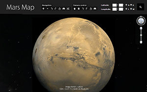

Installed Plugin Version: Google Maps JavaScript API
luhui Mars 3D Map allows you to view Mars landscape in a new way.
Mars is the fourth planet from the Sun and the second smallest planet in the Solar System, after Mercury. Named after the Roman god of war, it is often described as the "Red Planet" because the iron oxide prevalent on its surface gives it a reddish appearance. Mars is a terrestrial planet with a thin atmosphere, having surface features reminiscent both of the impact craters of the Moon and the volcanoes, valleys, deserts, and polar ice caps of Earth. The rotational period and seasonal cycles of Mars are likewise similar to those of Earth, as is the tilt that produces the seasons. Mars is the site of Olympus Mons, the second highest known mountain within the Solar System (the tallest on a planet), and of Valles Marineris, one of the largest canyons. The smooth Borealis basin in the northern hemisphere covers 40% of the planet and may be a giant impact feature.
Mars is host to seven functioning spacecraft: five in orbit – the Mars Odyssey, Mars Express, Mars Reconnaissance Orbiter, MAVEN and Mars Orbiter Mission – and two on the surface – Mars Exploration Rover Opportunity and the Mars Science Laboratory Curiosity. Defunct spacecraft on the surface include MER-A Spirit and several other inert landers and rovers such as the Phoenix lander, which completed its mission in 2008. Observations by the Mars Reconnaissance Orbiter have revealed possible flowing water during the warmest months on Mars.
Mars can easily be seen from Earth with the naked eye, as can its reddish coloring. Its apparent magnitude reaches −3.0, which is surpassed only by Jupiter, Venus, the Moon, and the Sun. Optical ground-based telescopes are typically limited to resolving features about 300 km (186 miles) across when Earth and Mars are closest because of Earth's atmosphere. (Source: Wikipedia)
 Screenshot of Mars 3D Map's website
Screenshot of Mars 3D Map's website

Screenshot of Mars 3D Map's website
Google Maps API is used in this project.
The Google Maps plug-in allows you to navigate and explore Mars geographic data using a web browser.
Easy Navigation
Use the new navigation panel to zoom in and zoom out or just press the random button to find a new amazing place.
New interesting places on the map
A drop down menu with a list of interesting places will help you to find where they are. The abstract list shows non popular areas like Desert Riples, Secret face Crater's center, Black Dune, Network System, Black River, Soft Lines, Black Holes and more.
Still to come are lists with popular places on Mars like mountains, landing places and more.